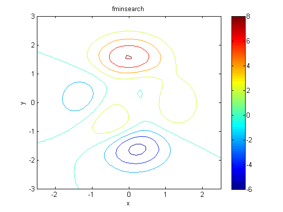
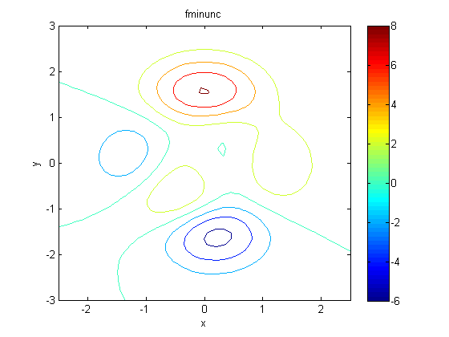

Peaks Demo
requireOptimToolbox;
[X,Y] = meshgrid(linspace(-2.5,2.5,40),linspace(-3,3,50));
Z = peaks(X,Y);
figure;
contour(X,Y,Z); colorbar
xlabel('x'); ylabel('y');
hold on
opts = optimset('fminsearch');
opts.Display = 'iter';
opts.LargeScale = 'off';
[Xfinal, fval, exitFlag, output] = fminsearch(@(x) peaks(x(1),x(2)), [0 0], opts);
title('fminsearch')
figure;
contour(X,Y,Z); colorbar
xlabel('x'); ylabel('y');
hold on
opts = optimset('fminunc');
opts.LargeScale = 'off';
opts.Display = 'iter';
Xfinal = fminunc(@(x) peaks(x(1),x(2)), [0 0], opts);
title('fminunc')
Iteration Func-count min f(x) Procedure
0 1 0.981012
1 3 0.980021 initial simplex
2 5 0.978699 expand
3 7 0.97716 expand
4 9 0.973749 expand
5 11 0.968962 expand
6 13 0.959764 expand
7 15 0.945598 expand
8 17 0.920231 expand
9 19 0.87942 expand
10 21 0.8094 expand
11 23 0.696466 expand
12 25 0.516453 expand
13 27 0.268677 expand
14 29 0.0669411 expand
15 30 0.0669411 reflect
16 32 0.0669411 contract inside
17 34 0.0669411 contract inside
18 36 0.0669411 contract outside
19 38 0.0669411 contract inside
20 40 0.0657888 reflect
21 42 0.06469 contract inside
22 44 0.0638478 reflect
23 46 0.0638478 contract inside
24 48 0.0632083 expand
25 50 0.0614069 expand
26 52 0.0593656 expand
27 54 0.0543904 expand
28 56 0.048567 expand
29 58 0.0347208 expand
30 60 0.0201901 expand
31 62 -0.0152496 expand
32 64 -0.0337082 expand
33 66 -0.0589869 reflect
34 68 -0.0589869 contract inside
35 69 -0.0589869 reflect
36 71 -0.0623339 reflect
37 73 -0.0634588 contract inside
38 75 -0.0636695 contract outside
39 77 -0.0644448 contract inside
40 79 -0.0648874 contract inside
41 81 -0.0648874 contract outside
42 83 -0.0648874 contract inside
43 85 -0.0649105 contract inside
44 87 -0.0649267 contract inside
45 89 -0.0649267 contract inside
46 91 -0.0649308 reflect
47 93 -0.064935 contract inside
48 95 -0.064935 contract inside
49 97 -0.064935 contract inside
50 99 -0.0649357 contract inside
51 101 -0.0649357 contract inside
52 103 -0.0649357 contract inside
53 105 -0.0649359 contract inside
54 107 -0.0649359 contract inside
55 109 -0.0649359 contract inside
56 110 -0.0649359 reflect
57 112 -0.0649359 contract inside
Optimization terminated:
the current x satisfies the termination criteria using OPTIONS.TolX of 1.000000e-04
and F(X) satisfies the convergence criteria using OPTIONS.TolFun of 1.000000e-04
First-order
Iteration Func-count f(x) Step-size optimality
0 3 0.981012 3.96
1 9 0.0289423 0.0663178 0.927
2 12 -0.0291808 1 0.666
3 15 -0.0569175 1 0.266
4 18 -0.064017 1 0.113
5 21 -0.064918 1 0.0146
6 24 -0.0649358 1 0.000709
7 27 -0.0649359 1 1.07e-05
8 30 -0.0649359 1 7.25e-07
Local minimum found.
Optimization completed because the size of the gradient is less than
the selected value of the function tolerance.
 